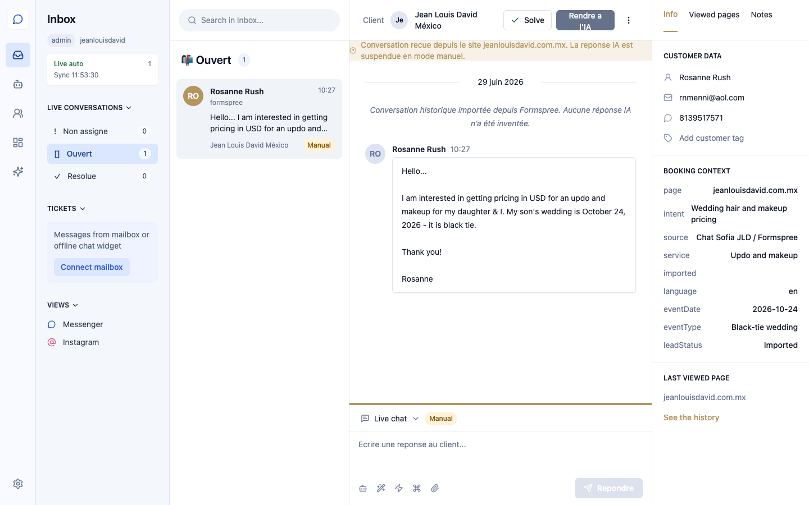
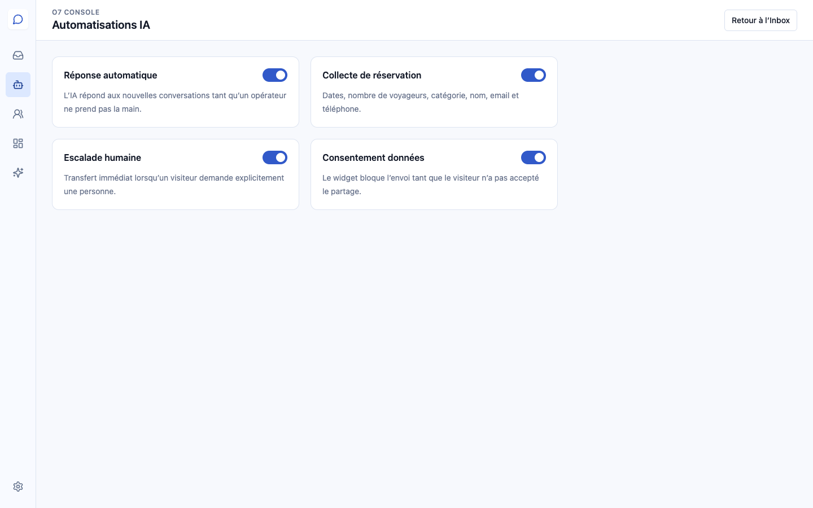
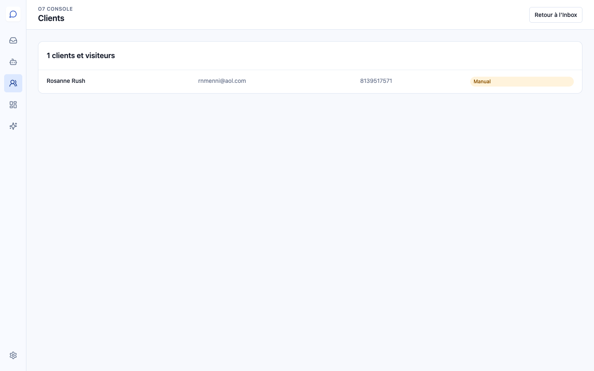
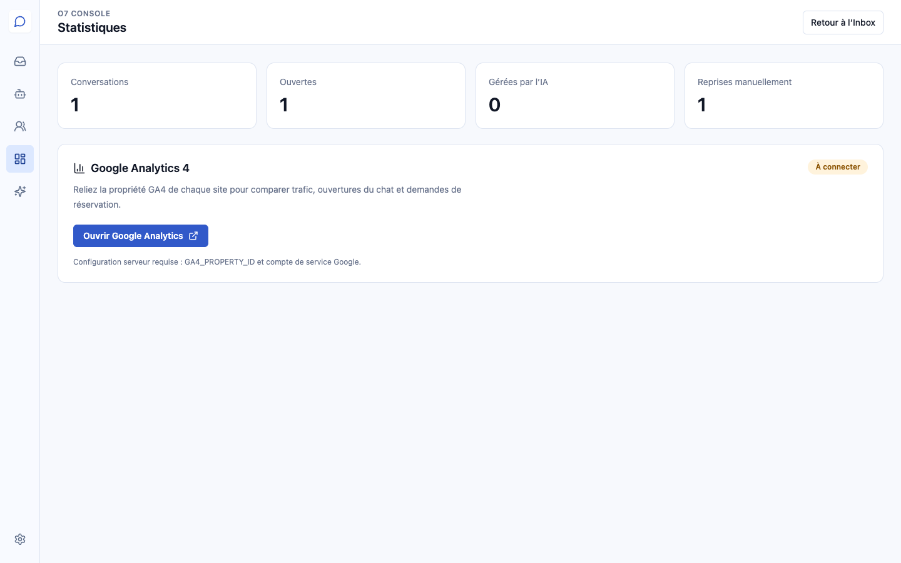
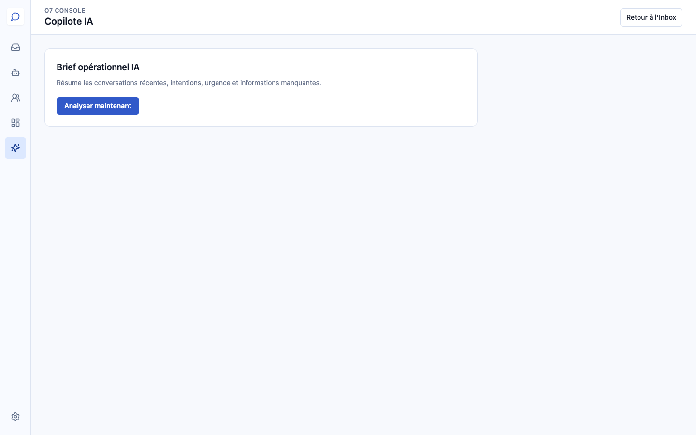
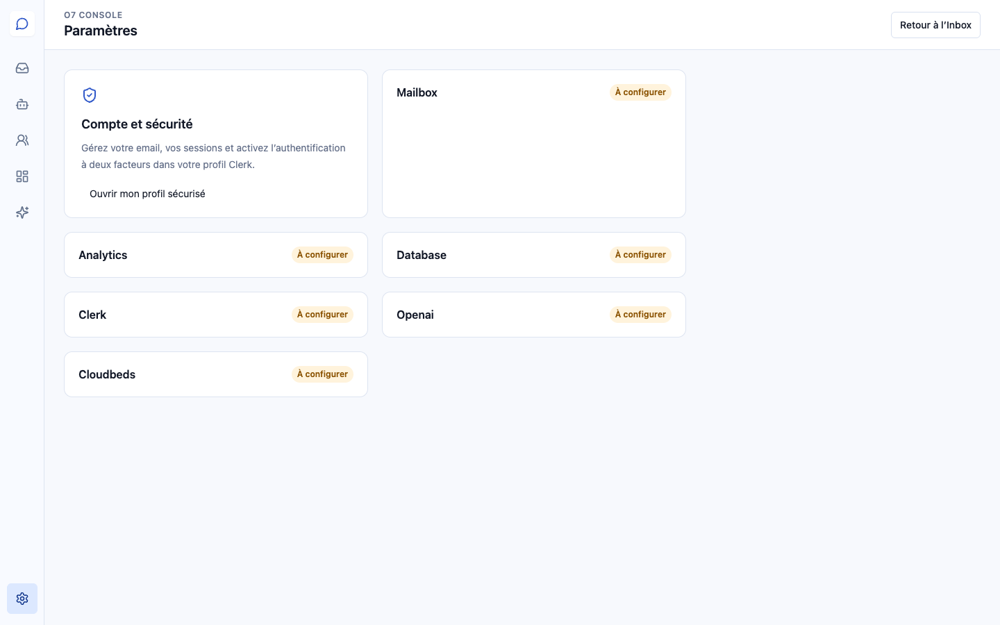

Guía de usuario personalizada para Jean Louis David México.
Versión cliente · 30 de junio de 2026Olivia AI Channel Manager centraliza las solicitudes recibidas desde el sitio Jean Louis David México.

Chat Olivia AI JLD / Formspree
El sistema reúne las respuestas automáticas, la recopilación de datos, la transferencia a una persona y el consentimiento para compartir información.

La sección Clients permite encontrar visitantes, datos de contacto y el estado de cada conversación.

Muestra conversaciones totales, abiertas, atendidas por IA y retomadas manualmente. Google Analytics 4 podrá relacionar tráfico, aperturas del chat y solicitudes.

El Copiloto genera un resumen de las conversaciones recientes, necesidades, urgencia e información pendiente.

Desde el perfil seguro se gestionan correo, sesiones y autenticación de dos factores.